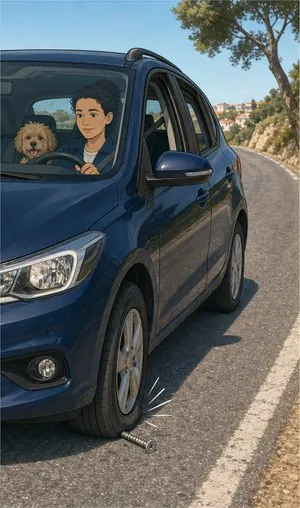
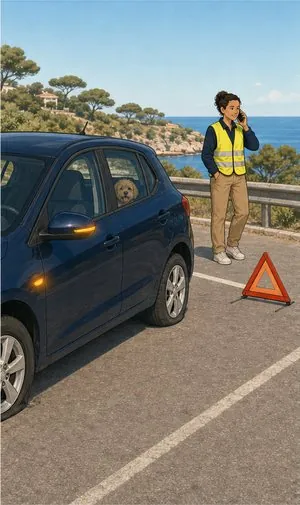
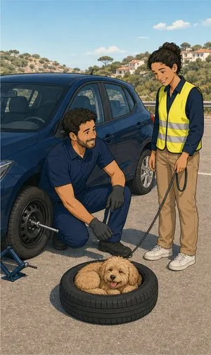

Seguro automóvel
É o seguro mais comum e, quase sempre, o pior comprado. Não por má-fé: por ninguém ter explicado o que estava lá dentro.
O que pode incluir
Cumprir a lei
é só o princípio.
Nenhum veículo circula sem responsabilidade civil: é a base legal. Todo o resto depende do plano e das opções — e é aí que valem cinco minutos de conversa antes de assinar.
Responsabilidade civil obrigatória
Paga os danos que causar a outras pessoas, veículos e bens. É o mínimo legal e não cobre nada do que for seu.
Danos próprios
Choque, colisão e capotamento: os estragos no seu carro, mesmo quando a culpa é sua.
Furto, roubo e incêndio
Contratadas quase sempre em conjunto. Cobrem o desaparecimento e a destruição do veículo.
Quebra isolada de vidros
Para-brisas, óculo e vidros laterais. Na maioria das apólices não faz perder o bónus.
Assistência em viagem
Reboque, desempanagem e regresso a casa. Confirme se começa à porta de casa ou só a partir de certa distância.
Veículo de substituição
O número de dias e a classe do carro variam muito entre companhias. É onde mais se nota a diferença no dia mau.
Proteção do condutor
Trata das suas próprias lesões — que a responsabilidade civil não cobre quando a culpa é sua.



Sem letra pequena
Onde a cobertura
acaba.
Uma leitura geral, para chegar à conversa com ideias claras. Cada apólice tem as suas condições — e lemo-las consigo.
Ver o que está e o que não está coberto lista indicativa
Normalmente coberto
- Danos a terceiros — pessoas, veículos e bens, dentro dos capitais da apólice.
- Choque, colisão e capotamento, se tiver contratado danos próprios.
- Incêndio, raio e explosão do veículo.
- Furto ou roubo, em regra após um período de espera para o caso de o carro aparecer.
- Fenómenos da natureza — tempestade, cheias, granizo — quando incluídos.
- Atos de vandalismo, em muitas apólices como cobertura opcional.
Normalmente excluído
- Álcool ou estupefacientes acima dos limites legais.
- Condução sem carta válida para a categoria do veículo.
- Desgaste, avarias mecânicas e falta de manutenção.
- Provas desportivas e utilização em circuito.
- Objetos deixados no carro, salvo cobertura específica de bagagem.
- Danos intencionais do condutor ou do tomador do seguro.
Para quem
Primeiro carro
Condutores jovens pagam mais, mas há margem: associar um condutor habitual com histórico, ajustar a franquia, escolher bem as coberturas. Compensa simular várias combinações antes de decidir.
Carro em segunda mão
O valor seguro deve acompanhar o valor real do veículo. Um capital desatualizado significa pagar a mais todos os anos e receber a menos em caso de perda total.
Carro de fim-de-semana
Quilometragem baixa e garagem fechada reduzem o prémio em várias companhias. Vale a pena declarar o uso real em vez de aceitar o perfil por defeito.
Informação resumida e de caráter geral. As condições que valem são as da informação pré-contratual e contratual do produto proposto.
Quem define coberturas, capitais e exclusões é a companhia. Veja a página oficial do produto e traga-nos as dúvidas.
Perguntas frequentes
O que nos
perguntam ao balcão.
Posso mudar de seguradora a meio do ano?
Na renovação, sim: o contrato é anual e denuncia-se cumprindo o pré-aviso da apólice, em regra 30 dias antes. A meio da anuidade, só nos casos previstos na lei ou no contrato.
Tratamos da denúncia e da entrada em vigor da nova apólice para que não fique um único dia sem seguro.
O meu carro é antigo. Vale a pena ter danos próprios?
Depende do valor do veículo e da franquia. Num carro de baixo valor comercial, o prémio dos danos próprios pode aproximar-se do que receberia em caso de perda total.
Fazemos as contas consigo. Às vezes a resposta honesta é que não compensa.
O que é exatamente a franquia?
É a parte do prejuízo que fica a seu cargo em cada sinistro. Com 250 euros de franquia e um arranjo de 900, a seguradora paga 650 e os outros 250 ficam a seu cargo.
Franquia mais alta baixa o prémio anual e aumenta o que paga no dia do acidente. Depende de quanto consegue suportar de uma vez sem desequilibrar as contas do mês.
Fui o culpado. O seguro paga o meu carro?
Só se tiver contratado danos próprios. A responsabilidade civil obrigatória cobre os danos causados a terceiros, não os do seu próprio veículo.
Tenho de preencher a declaração amigável?
Não é obrigatório, mas é o caminho mais rápido. Assinada pelos dois condutores, evita meses de discussão sobre a versão dos factos.
Se o outro condutor se recusar a assinar, recolha matrícula, nome, companhia e, se possível, fotografias e contactos de testemunhas. Depois ligue-nos.
Traga a sua apólice atual.
Dizemos-lhe o que falta.
Ligue-nos com a apólice à frente. Se já estiver bem servido, dizemos isso e não lhe vendemos nada.
Sem compromisso. Não usamos os seus dados para mais nada.